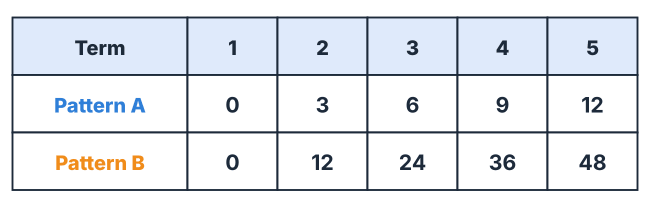

Session 1 · Operations and Algebraic Thinking; Number and Operations in Base Ten
- What is the value of the digit 8 in 13,327.083?MULTIPLE CHOICE(A)0.8(B)8(C)0.008(D)0.08Answer: (D) 0.08
- The 8 is in the hundredths place.
- Its value is 8 × 0.01 = 0.08.
- Lucia buys 2 bags of popcorn for $0.25 each. What is the total cost?MULTIPLE CHOICE(A)$0.50(B)$5.00(C)$2.25(D)$0.25Answer: (A) $0.50
- Multiply: 2 × $0.25.
- 2 × $0.25 = $0.50.
- Nia buys a book for $9.28 and one pen for $3.44. Nia pays with one $20 bill. How much change should Nia get?MULTIPLE CHOICE(A)$12.72(B)$7.28(C)$8.28(D)$14.16Answer: (B) $7.28
- Total: $9.28 + $3.44 = $12.72.
- Change: $20.00 − $12.72 = $7.28.
- The number line shows jumps of 0.25 from 0 to 2. What is 2 ÷ 0.25?MULTIPLE CHOICE
 (A)7(B)9(C)0.5(D)8Answer: (D) 8
(A)7(B)9(C)0.5(D)8Answer: (D) 8- Count the jumps of 0.25 that fit between 0 and 2.
- There are 8 jumps, so 2 ÷ 0.25 = 8.
- What is the rule for the pattern 1.1, 1.8, 2.5, 3.2, … ?MULTIPLE CHOICE(A)Multiply by 2(B)Add 0.7(C)Add 1.4(D)Add 1.7Answer: (B) Add 0.7
- Compare each term with the one before it.
- The rule is “Add 0.7.”
- 42 apples are shared equally among 4 baskets. The answer to 42 ÷ 4 is 10 R 2. What does 10 R 2 mean?MULTIPLE CHOICE(A)Each of the 4 baskets gets 10 apples, and 2 apples are left over.(B)There are 10 baskets with 4 apples each and none left over.(C)Each of the 4 baskets gets 11 apples.(D)Each of the 4 baskets gets 2 apples, and 10 apples are left over.Answer: (A) Each of the 4 baskets gets 10 apples, and 2 apples are left over.
- 10 is the number each group gets; 2 is what remains.
- Each of the 4 baskets gets 10 apples, and 2 apples are left over.
- Pattern A: start at 0, add 2. Pattern B: start at 0, add 8. Which ordered pair (A, B) would NOT be on the graph?MULTIPLE CHOICE(A)(2, 8)(B)(8, 32)(C)(4, 17)(D)(6, 24)Answer: (C) (4, 17)
- Every pair on the graph has B = 4 × A.
- (4, 17) does not follow that rule.
- In 7,426 ÷ 79, what is the greatest place value in the quotient?MULTIPLE CHOICE(A)ones(B)tens(C)hundreds(D)thousandsAnswer: (B) tens
- 79 × 10 = 790 ≤ 7,426 < 7,900 = 79 × 100.
- So the quotient has 2 digits; the first is in the tens place.
- Sam buys art supplies for $14.47. Round the price to the nearest ten cents.MULTIPLE CHOICE(A)$14.00(B)$14.40(C)$14.48(D)$14.50Answer: (D) $14.50
- Look at the digit to the right of the tenths place.
- $14.47 rounds to $14.50.
- Look at the two patterns in the table. Which statement is true?MULTIPLE CHOICE

(A)Each term in Pattern B is 4 more than the matching term in Pattern A.(B)Each term in Pattern B is 9 more than the matching term in Pattern A.(C)Each term in Pattern A is 4 times the matching term in Pattern B.(D)Each term in Pattern B is 4 times the matching term in Pattern A.Answer: (D) Each term in Pattern B is 4 times the matching term in Pattern A.- Compare matching terms: 6 and 24, 9 and 36.
- Each term in Pattern B is 4 times the matching term in Pattern A.
- Put the steps for 53 × 44 in order (standard algorithm). A) Add 212 + 2,120 = 2,332. B) Multiply 53 × 40 = 2,120. C) Multiply 53 × 4 = 212.MULTIPLE CHOICE(A)B, C, A(B)B, A, C(C)C, B, A(D)C, A, BAnswer: (C) C, B, A
- First multiply by the ones digit, then by the tens, then add the partial products.
- Order: C, B, A.
- Which is the best estimate of 3.3 × 3.1?MULTIPLE CHOICE(A)about 910(B)about 6(C)about 90(D)about 9Answer: (D) about 9
- 3.3 ≈ 3 and 3.1 ≈ 3.
- 3 × 3 = 9.
- Select ALL the problems that are matched with the correct answer.SELECT ALL THAT APPLYPack A has 2 pencils for $2.34. Pack B has 5 pencils for $8.35. Which pack costs less per item? → Pack BPack A has 4 pencils for $5.96. Pack B has 2 pencils for $2.62. Which pack costs less per item? → Pack BPack A has 3 pencils for $2.43. Pack B has 2 pencils for $2.90. Which pack costs less per item? → Pack BPack A has 8 pencils for $4.88. Pack B has 3 pencils for $1.56. Which pack costs less per item? → Pack BAnswer: Pack A has 4 pencils for $5.96. Pack B has 2 pencils for $2.62. Which pack costs less per item? → Pack B; Pack A has 8 pencils for $4.88. Pack B has 3 pencils for $1.56. Which pack costs less per item? → Pack B
- Work each problem and compare with the answer shown.
- Pack A has 2 pencils for $2.34. Pack B has 5 pencils for $8.35. Which pack costs less per item? → Pack B: not correct.
- Pack A has 4 pencils for $5.96. Pack B has 2 pencils for $2.62. Which pack costs less per item? → Pack B: correct.
- Pack A has 3 pencils for $2.43. Pack B has 2 pencils for $2.90. Which pack costs less per item? → Pack B: not correct.
- Pack A has 8 pencils for $4.88. Pack B has 3 pencils for $1.56. Which pack costs less per item? → Pack B: correct.
- Select ALL the problems that are matched with the correct answer.SELECT ALL THAT APPLYWhat is 10⁶ written in standard form? → 1,000,000What is 10⁵ written in standard form? → 100,000What is 10⁴ written in standard form? → 100,000What is 10⁵ written in standard form? → 50Answer: What is 10⁶ written in standard form? → 1,000,000; What is 10⁵ written in standard form? → 100,000
- Work each problem and compare with the answer shown.
- What is 10⁶ written in standard form? → 1,000,000: correct.
- What is 10⁵ written in standard form? → 100,000: correct.
- What is 10⁴ written in standard form? → 100,000: not correct.
- What is 10⁵ written in standard form? → 50: not correct.
- Select ALL the problems that are matched with the correct answer.SELECT ALL THAT APPLY0.74 ÷ 2 → 0.374.97 ÷ 7 → 0.712.94 ÷ 7 → 0.522.24 ÷ 4 → 0.66Answer: 0.74 ÷ 2 → 0.37; 4.97 ÷ 7 → 0.71
- Work each problem and compare with the answer shown.
- 0.74 ÷ 2 → 0.37: correct.
- 4.97 ÷ 7 → 0.71: correct.
- 2.94 ÷ 7 → 0.52: not correct.
- 2.24 ÷ 4 → 0.66: not correct.
- Leo solved this problem. Fill in the blank: 59.3 + ___ = 94.4 Leo answered: 153.7 Find the mistake. What is the correct answer?SHORT ANSWERAnswer: 35.1
- Mistake: added instead of subtracting.
- The missing addend is 94.4 − 59.3.
- 94.4 − 59.3 = 35.1.
- The correct answer is 35.1, not 153.7.
- Estimate 328 × 21 by rounding each factor to its greatest place value.SHORT ANSWERAnswer: 6,000
- 328 rounds to 300; 21 rounds to 20.
- 300 × 20 = 6,000.
- Nia solved this problem. Divide: 4,248 ÷ 6 Nia answered: 70 Find the mistake. What is the correct answer?SHORT ANSWERAnswer: 708
- Mistake: left out a digit of the quotient.
- Divide place by place: how many groups of 6 in each part of 4,248?
- 4,248 ÷ 6 = 708. Check: 708 × 6 = 4,248.
- The correct answer is 708, not 70.
- Dev solved this problem. In 28 × 140, the 140 is replaced by 28. How many times as large is the new product as the old one? Write a fraction. Dev answered: 16 Find the mistake. What is the correct answer?SHORT ANSWERAnswer: 15
- Mistake: miscounted.
- 28 is 15 of 140.
- So the product becomes 15 as large.
- The correct answer is 15, not 16.
- Field trip. 138 students and 12 adults go on a field trip. Each bus holds 44 people and costs $187.50.CONSTRUCTED RESPONSE · 4 POINTS(a) How many people go on the trip?150 people(b) How many buses are needed?4 buses(c) What do the buses cost in all?$750.00(d) The cost is shared equally by all the people. How much does each person pay?$5.00Scoring: 1 point for each part with a correct answer and supporting work; give the point for a correct method that carries forward an earlier wrong answer.